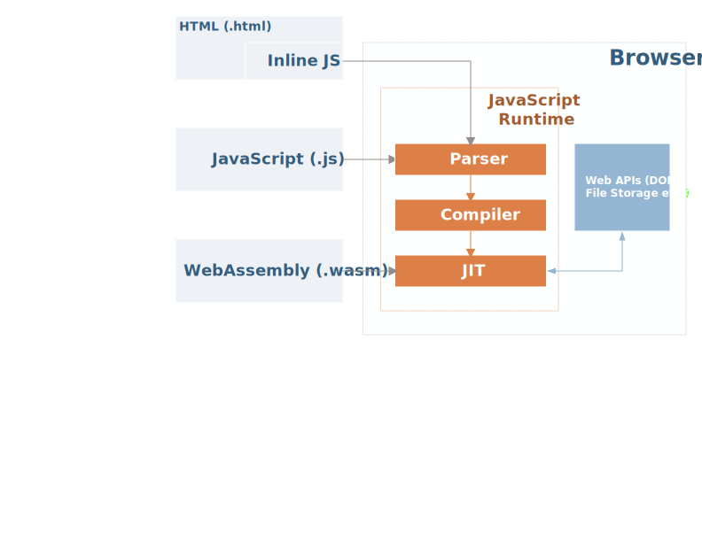

Intro To Blazor
Dave Glick
Twitter: @daveaglick
GitHub: /daveaglick
What Is Blazor?
"Blazor is an experimental .NET web framework using C#/Razor and HTML that runs in the browser with WebAssembly"
https://github.com/aspnet/Blazor
What Is WebAssembly?
"WebAssembly (abbreviated Wasm) is a binary instruction format for a stack-based virtual machine."
Blazor Architecture *
- The Mono C runtime is compiled to WebAssembly
- The Mono IL interpreter is used to evaluate .NET assemblies
- Blazor files are compiled to normal .NET assemblies
* Subject to change
How WebAssembly Works

JavaScript Interop: Events
To handle a button click...
- The Mono WebAssembly bootstrapper (mono.js) registers a click event handler
- The JS click event is handled by mono.js and passed to the Mono WebAssembly runtime
- The Mono WebAssembly runtime then exposes the event for any .NET handlers like Blazor
JavaScript Interop: Rendering
- Blazor maintains a virtual DOM
- Only the changes are propagated to the browser DOM
- Similar to Vue.js or React
- The Blazor bootstrapper (blazor.js) contains a rendering callback
- Blazor pages invoke the callback with required DOM changes